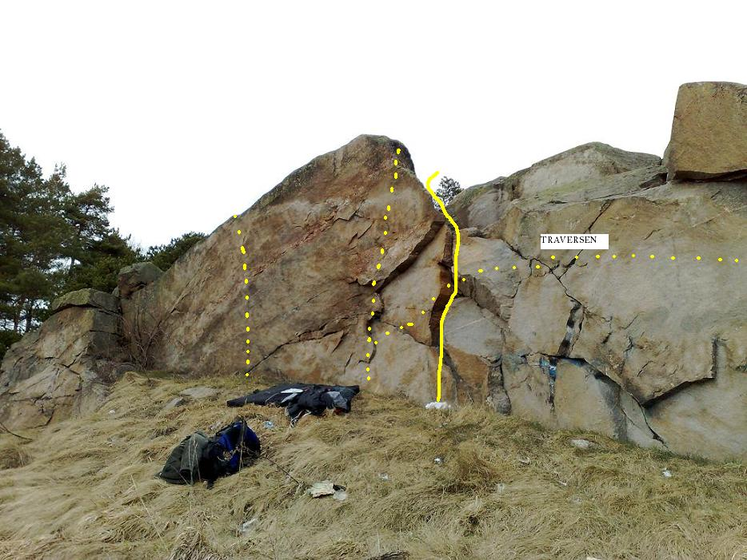
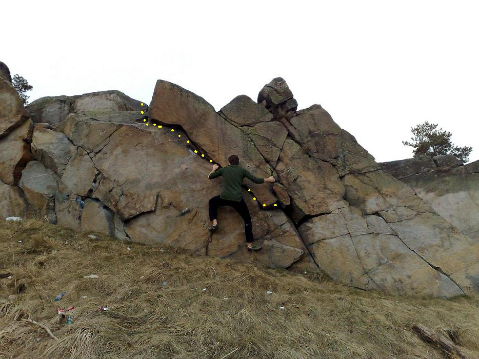
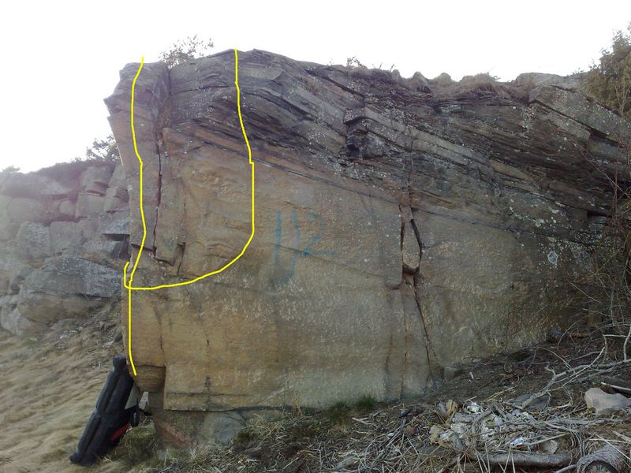
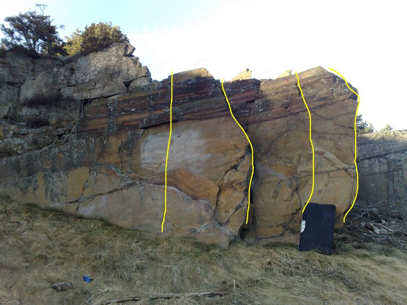

Våxnäs
Lat: 59.387936
Long: 13.461063
Allmänt
I stadsdelen Våxnäs (centralt i Karlstad) finns dessa klippor. En handfull olika väggar på ca 3 meters höjd. Sol under hela dagen ger lång säsong och något enstaka problem kanske kan försvara ett besök.
Vägbeskrivning
Kör mot stadsdelen Våxnäs, följ vägen Karmgatan mot Våxnäshallen och en fotbollsplan. Följ Karmgatan vänster när du ser hallen och fotbollsplanen rakt fram. Följ Karmgatan förbi avfarten till Hemvägen tills vägen övergår i en bussfil (bussfilen fortsätter förbi Vårdcentralen Västerstrand). Parkera i vändplanen, där det står bilar (gratis) och titta åt höger/upp mot skogen så borde du se klipporna. 100 meter från parkering.
Sektioner
Sektionerna är uppräknade från vänster till höger.
Graderna endast uppskattade av klättrare utan erfarenhet av bouldergrader och dess disciplin. Var god ändra direkt på sidan om de känns felaktiga.
HIV-väggen

Klippartiet högst upp till vänster. Börjar med en tyngre överhängande parti. Mer befriad från grepp än övriga partier vilket gör den till Våxnäs testpiece. Allteftersom väggen sluttar nedåt höger, blir problemen lättare.
Sektionen uppkallad efter allt skräp som tyvärr finns i direkt anslutning till väggen. Krossade glasflaskor, kondomer och vem vet... kanske en kanyl gömmer sig i gräset?
Glöm inte paddan för att undvika... sjukdomar och annat. Ett annat alternativ är vinterbesök, så snön isolerar och skyddar.
Väggen är vid en slänt. Om du inte vill trilla ner och rulla nedför slänten rekommenderas en spotter.

- 1
- Arslet I Dåligt Skick
- 6-isch?
- 4-fingercrimp för vänster hand som nätt och jämt sväljer fingertopparna. Grov rensning resulterade i riktigt bra crimp för höger hand. Etablera fötter och dra sedan direkt till kanten. Hoppstart givetvis uteslutet.
- 2
- Pulkrunkaren
- 6-isch?
- Mellan aids och herpes. vänster hand på bra crimp, höger hand förslagsvis i undercling. upp till sidogrepp under kant eller launcha hela vägen upp. Går du ut höger till snälla kanten är du svag och feg.
- 2-1
- Jag väljer Herpes
- 5-isch?
- Samma start som pulkrunkaren, men du är svag och flyr ut till höger och snälla utsteget.
- 3
- Herpes
- 4?
- Något för alla (vilket namnet syftar på). Upp via stora tydliga hyllor och flak mitt på HIV-väggen.
- 4
- projekt
- ?
- Travers. Börja där led 2 börjar. Gå via enkla grepp snett uppåt höger till den slopade kanten ovanför släta väggen. Se upp så du inte lägger handen i glas på kanten. Fortsätt genom "tomtar i trumpeten" och avsluta på lösa blocket där denna börjar. Namnförslag: Hepatit C
- 5
- Tomtar i trumpeten
- 5b-5c?
- Börja med match på stora lösa blocket, följ sedan stora sprickan snett upp åt vänster. Bjuder mer motstånd än det ser ut.
U2-väggen

Namnet U2 står/stod skrivet på väggen. Därav namnet på denna sektion. En plattvägg i vinkel. Några problem gjorda, men något ytterligare kanske möjligt.
Namnen på problemen följer samma tema som sektionen.
Problemen uppräknade från höger till vänster.
- 1
- Beautiful Day
- 6a?
- Börjar på areten, leta dig åt höger och etablera dig på vettiga crimpar innan du skickar till bra grepp rakt upp. Går du upp via stora greppet kl 10-11 nallar du på annat problem. Aja baja.
- 2
- Sweetest thing
- 5-isch?
- Börja på areten och följ den sedan rakt upp
- 3
- Elevation
- 6a?
- Börjar på platta väggen till vänster om areten, fina startgrepp, sedan "långt" one-move-wonder till tydliga hyllan strax under toppen och upp.
- 4
- Bad
- ?
- Upp via tydliga grepp "i hörnet" till vänster om Elevation
- 5
- I still haven't found what I'm looking for
- ?
- Över tvärhyllorna till vänster om "bad".

Vinkel-väggen
En vägg likt de andra i 90 graders vinkel. Placerad ganska långt till höger.
Till skillnad mot andra väggar i vinkel så har denna en stenplatta i botten.
Lederna räknas upp från höger till vänster.
- 1
- åh, strääääääääck.
- 6a?
- Sittstart och händer på två ok lister, sträck dig upp till en liten horisontalspricka. Etablera dig och skicka till kanten.
- 2
- Kung Alkinoos
- 5?
- Börja på areten och leta dig upp åt höger. Dra sedan rakt upp. (Kung Alkinoos var drottning Aretes make)
- 3
- Faiakernas drottning
- 5?
- Rakt upp på areten (Faiakernas drottning hette Arete).

Kategori:vertikalt
Kategori:bouldering
Category:Värmland
Copyright (C) Permission is granted to copy, distribute and/or modify this document under the terms of the GNU Free Documentation License, Version 1.3